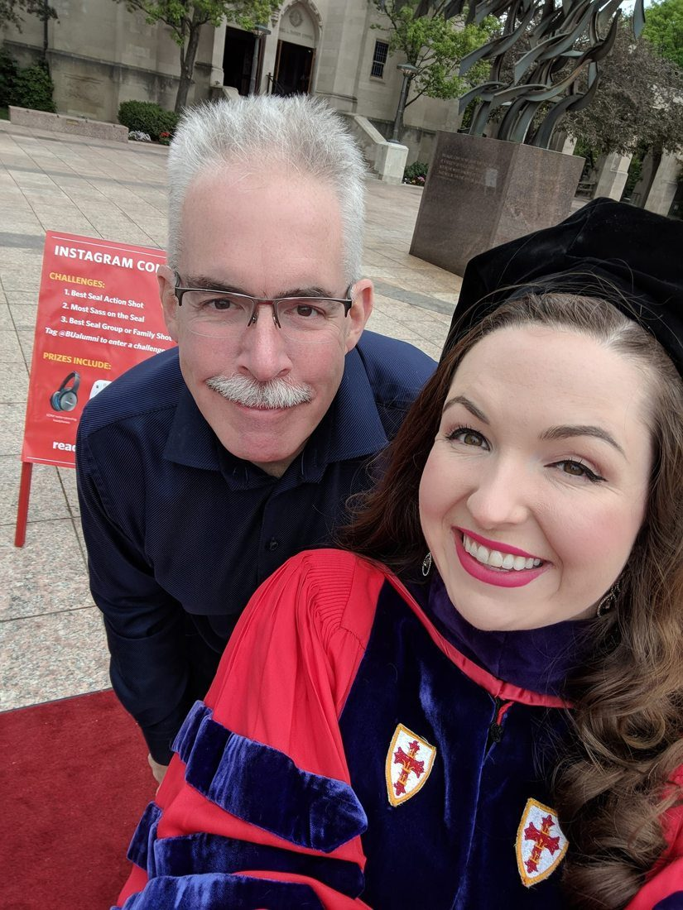

Boston University School of Law · Commencement 2018 · 765 Commonwealth Avenue
Boston · Massachusetts · A Proud Father
There are moments that stop you in your tracks — not because anything dramatic happens, but because something quietly enormous has. Standing outside Marsh Chapel on Commonwealth Avenue, watching your daughter in the crimson and purple regalia of a Boston University juris doctor, is one of those moments.
Kaitlin Elizabeth O'Brien earned her law degree from Boston University School of Law in May 2018. Three years of relentless work, of cases parsed and arguments honed and sleepless nights spent turning legal theory into something usable — and here she was, grinning in doctoral robes on a perfect spring morning, ready to go do it for real.
A father doesn't often get to see his child fully become themselves. This was one of those rare days.
Place & Institution
Founded in 1872, BU Law is one of the oldest law schools in the country and was among the first to admit women and Black students on an equal basis — a distinction it has carried proudly ever since. Its alumni include Supreme Court justices, senators, and generations of public defenders, corporate counselors, and advocates who went on to shape American law. The school sits at the heart of the Charles River campus, a few minutes' walk from Fenway Park.
The J.D. is a professional doctorate — three demanding years of contracts, torts, constitutional law, civil procedure, and a hundred other disciplines that teach you not just what the law says but how to think about what it means. BU Law's program is known for its clinical offerings, placing students in real courtrooms and real cases from the earliest years of study. By the time you walk at commencement, you have already lawyered.
The doctoral hood and gown carry a precise language of their own. The crimson and red of BU Law's regalia — the hood's velvet trim, the chevrons on the sleeve — follow conventions established in 1895 by an American intercollegiate commission and haven't changed substantially since. When you see someone in doctoral robes, you are seeing centuries of academic tradition made cloth, an institution saying: this person has done the work.
BU's main campus runs along a remarkable stretch of Commonwealth Avenue in Boston's Fenway neighborhood — three-quarters of a mile of university buildings, punctuated by Marsh Chapel, whose Norman tower anchors the spiritual and ceremonial life of the university. Commencement on the plaza and steps of Marsh Chapel, with the Charles River a block to the south and the city rising to the north, is one of the more beautiful graduation settings in New England.
Boston is, among many other things, an education city — home to more universities per square mile than almost anywhere on earth. Harvard, MIT, Northeastern, Tufts, Emerson, and BU exist in an ecosystem of overlapping ambitions that has given the city its particular intellectual character. For a law student, there is no better place: federal courts, state courts, major firms, public interest organizations, and the full machinery of the American legal system are all within walking distance or a short T ride.
The degree is the beginning, not the end. A J.D. from BU Law opens doors — to practice, to policy, to academia, to the thousand careers that require someone who can read a statute, spot an argument, and think clearly under pressure. Kaitlin walked out of that commencement with a credential, a network, and three years of intellectual combat in her bones. What she does with it is the rest of the story.
"The law is reason, free from passion." — Aristotle. The best lawyers know that reason and passion are not, in fact, mutually exclusive.
There is something particular about watching someone you love do a hard thing well. Law school is not a gentle process — it is designed to be uncomfortable, to stretch the way you think until your old cognitive habits no longer fit. The Socratic classroom, the endless case briefs, the moot court arguments that teach you to defend a position you may not believe while anticipating every counterargument — all of it is designed to produce someone who does not flinch at complexity.
Kaitlin O'Brien is not someone who flinches at complexity. The photograph outside Marsh Chapel captures a moment of arrival, but it doesn't show the three years of getting there — the early mornings in the library, the study groups that ran past midnight, the first brief and the twentieth, the clients seen in clinics, the professors who pushed and the ones who helped. It shows the product of all of that, grinning in crimson, on a spring morning in Boston.
A father's job, in the best version of the story, is to be present at these moments — not as the protagonist, but as a witness. To show up, to pay attention, to understand what is being achieved even when you cannot fully understand how it was done. To be proud in a way that doesn't need to announce itself loudly because it is already completely obvious.
Boston University's motto is Learning, Virtue, Piety. On this particular May morning, the first of those had been thoroughly demonstrated. The other two, in their own time and way, would follow.